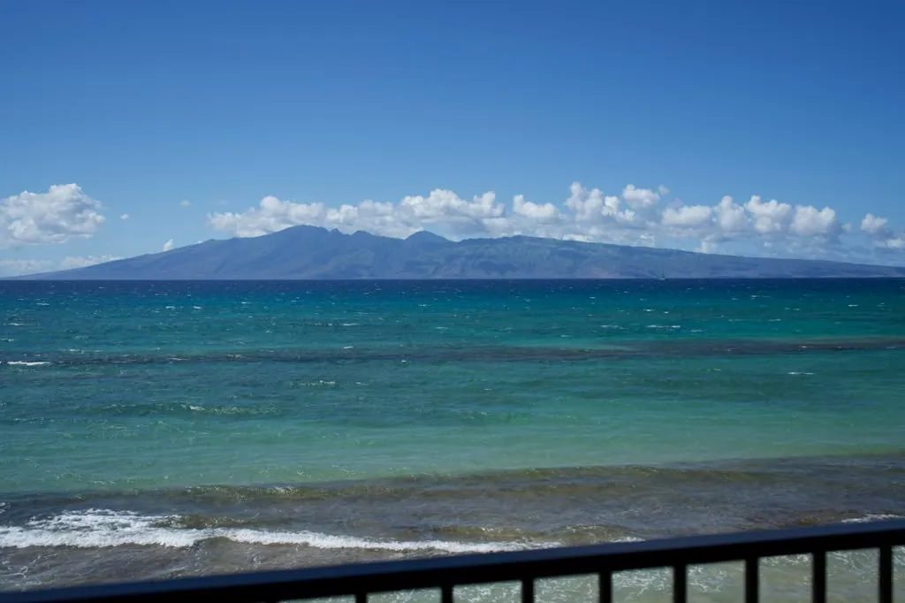
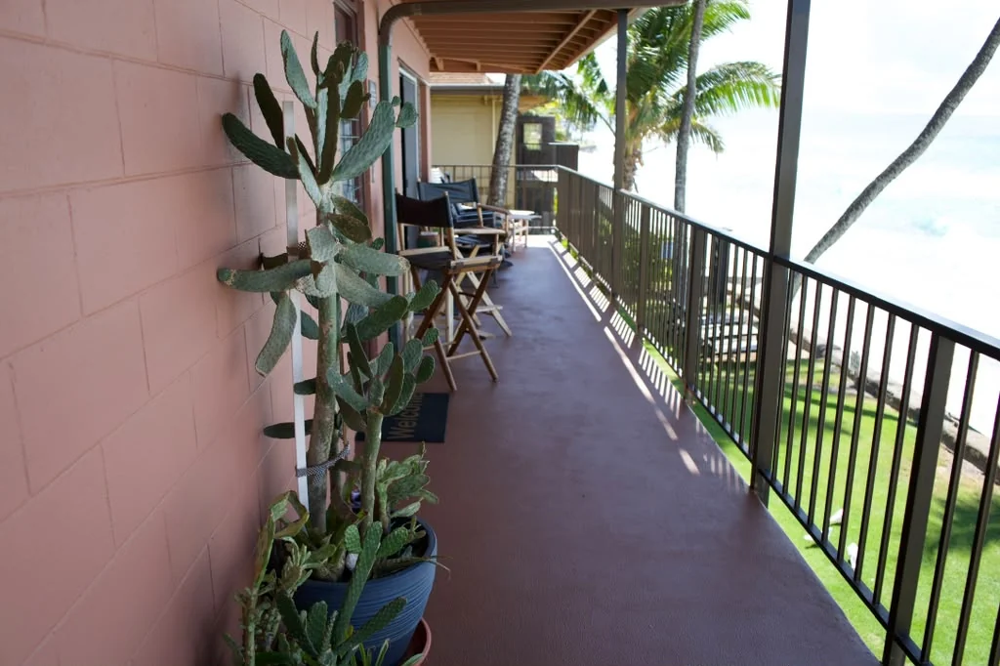
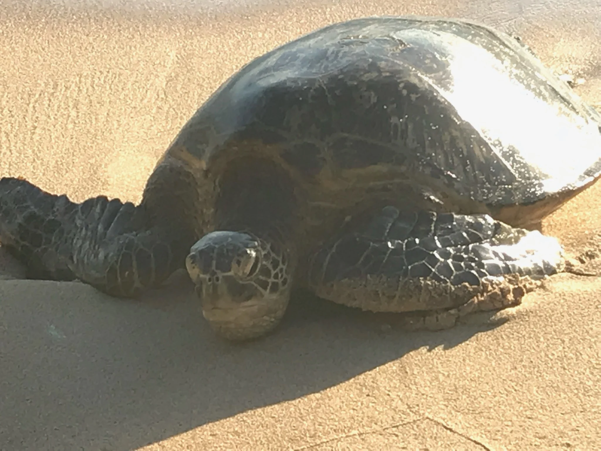
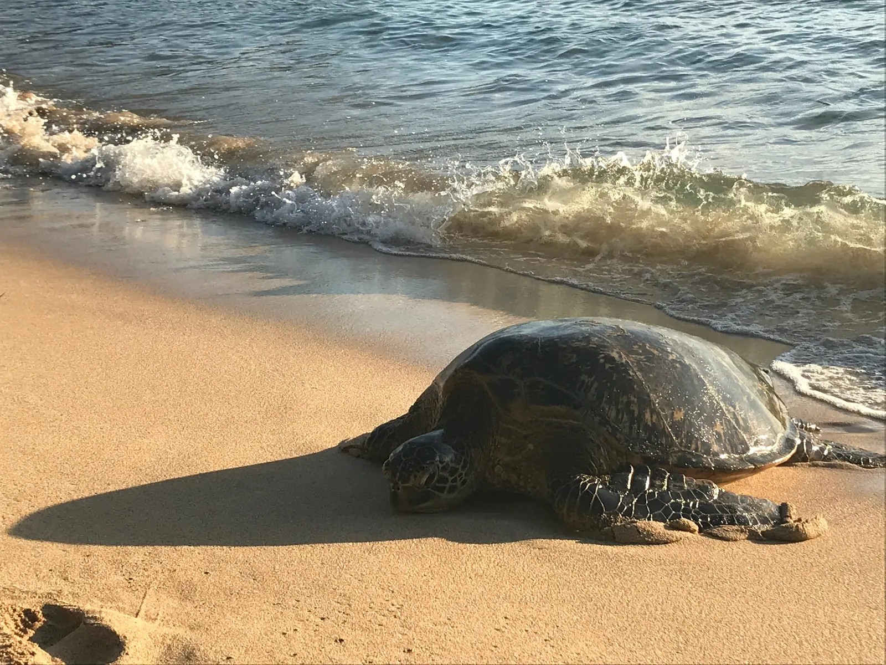
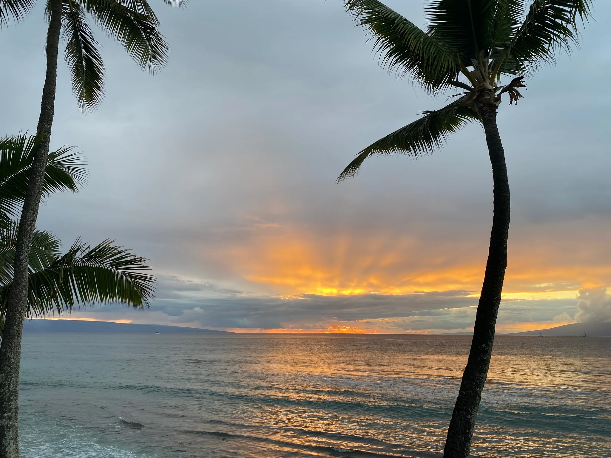
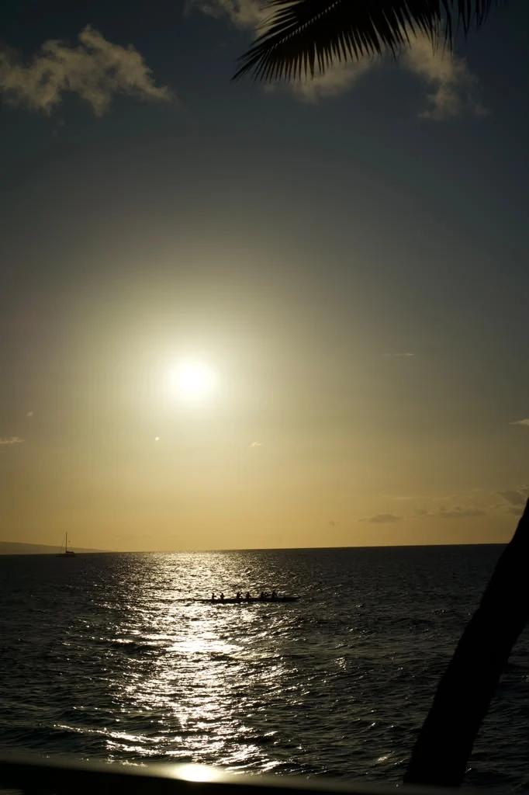
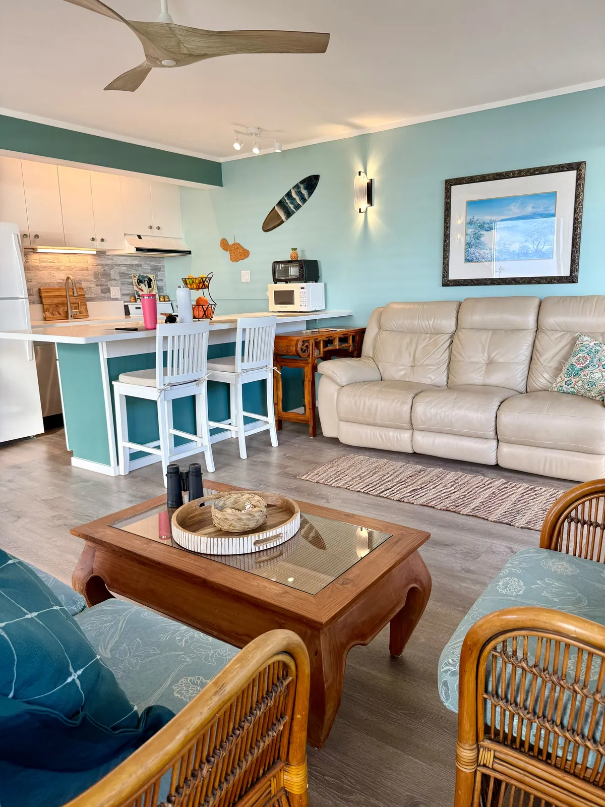

The morning
Tea in the kitchen, and the whole channel in front of you.
You wake to the sound of the waves and the resident lovebirds. You put the kettle on, and the window gives you the whole panorama: turquoise going to marine blue, and the islands of Molokai and Lanai sitting out on the horizon.
Then you carry the cup out onto the lanai, and the trade winds arrive with the smell of salt on them.

The reason people rebook
Thirty-five feet of private lanai.
Most oceanfront condos hand you twelve feet and a neighbour three arm-lengths away. This one runs the entire length of the unit, faces open water, and has no resort beside it to fill the view or the quiet.
- 180°open water
- 700square feet
- 1bedroom
- 0resorts next door



The water
The reef starts where the lawn ends.
No road to cross and no drive. Snorkelling is a decision you make ten minutes beforehand, and the honu are around the reef most days.
Hawaiian green sea turtles haul out on the sand below the building to bask. They are wild and federally protected. Watch from about ten feet back and let them be.
The evening
Then the sun goes down across the channel.
No resort tower in the way, and nobody asking you to move along. Seven years of sunsets, all from the same rail, and after dark the moon puts a path straight out across the water.


Inside
Seven hundred square feet, all of it pointed at the water.
The living room opens onto the lanai, so in practice they are one room. Everything below is visible in the photos; nothing listed here that you will not find when you arrive.

- Kitchen
- Full size: oven and stove, fridge, microwave, dishwasher, coffee maker, and a breakfast bar with stools.
- Bedroom
- One separate bedroom, with the Aloha sign over the bed.
- Bathroom
- Updated, with a walk‑in shower.
- Living room
- Rattan seating, TV, and the lanai door along the whole wall.
- On the lanai
- Rocking chairs, director’s chairs and loungers, set among the planters.
- Throughout
- Ceiling fans, and the trade wind that comes straight off the water.
The whole place
Every room, and everything outside it.
Room by room, then the water, the weather and the wildlife, photographed from the same lanai over seven years.
Before you ask
The questions we get.
How private is the lanai, really?
It runs the full thirty-five feet of the unit and faces open water. There is no resort building beside it, which is the part most listings on this coast cannot say. You can sit at one end with coffee and not see anyone.
How close is the water?
The lawn ends and the reef begins. No road to cross, no drive, no shuttle. Snorkelling is a decision you make ten minutes beforehand.
Will we actually see turtles?
Honu (Hawaiian green sea turtles) haul out on the sand below the building to bask, and they are around the reef most days. They are wild animals and federally protected, so the rule is to watch from about ten feet back and never touch or crowd them.
Is it big enough for us?
It is a one-bedroom of about 700 square feet, plus the lanai, which in practice is the room you will use most. Message us with your dates and party size and we will tell you honestly whether it suits.
What is the view actually of?
Open channel with Molokai and Lanai across it, sailboats and outrigger canoes through the day, and the sun going down over the water every evening. In winter the humpbacks pass through this channel.
How do we book, and what does it cost?
Message us for dates and rates. We would rather answer you directly than have you work it out from a calendar. We will tell you which weeks are worth it and which are not.
Availability
Come sit on the lanai.
Message us for dates, rates, and the things that never make it into a listing: which end of the lanai catches the morning sun, and when the whales come through.